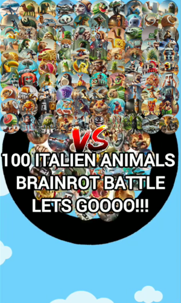

What is Italian Brainrot?
https://www.tiktok.com/@marble_brainrot_master/video/7482856083283922198
What Are Italian Brainrot Animals?
These are AI-generated animals that have been humorously (and often disturbingly) transformed to embody stereotypical or surreal Italian characteristics, often to the point of absurdity. They’re part of the broader “Italian brainrot” meme aesthetic, but focused solely on animals imagined through a warped, memeified lens of Italian culture.

Common Features:
Animal + Italian Stereotype Fusion:
- A pigeon wearing a gold chain, sipping espresso from a tiny demitasse
- cat in a tailored pinstripe suit throwing a pizza like a frisbee in front of the Colosseum
- A dog with a mustache, chef’s hat, and a body made of breadsticks
- A frog in a gondola, serenading the moon with a mandolin
Visual Chaos:
- Overly saturated or baroque-style backdrops
- Spaghetti fur, pasta limbs, salami tails
- Animals with human-like hands aggressively gesturing
- Mismatched proportions and faces, thanks to AI generation errors
Cultural Elements:
- Italian flags awkwardly plastered everywhere
- Renaissance architecture in the background (regardless of the animal)
- Catholic iconography (e.g., a holy ferret with a pizza halo)